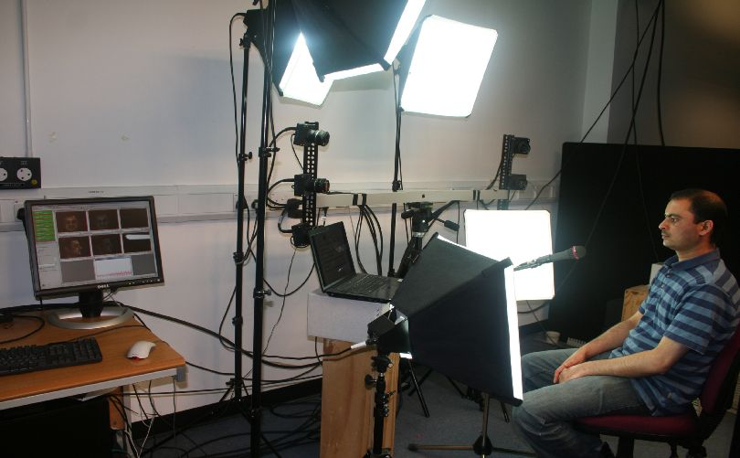
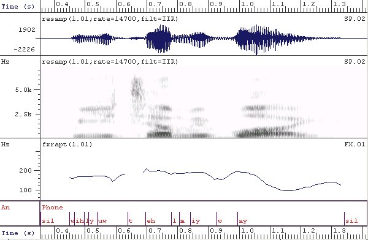
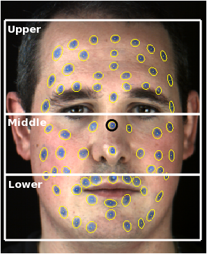

Corpus design
The SAVEE database was recorded from four native English male speakers (identified as DC, JE, JK, KL), postgraduate students and researchers at the University of Surrey aged from 27 to 31 years. Emotion has been described psychologically in discrete categories: anger, disgust, fear, happiness, sadness and surprise. This is supported by the cross-cultural studies of Ekman [6] and studies of automatic emotion recognition tended to focus on recognizing these [12]. We added neutral to provide recordings of 7 emotion categories. The text material consisted of 15 TIMIT sentences per emotion: 3 common, 2 emotion-specific and 10 generic sentences that were different for each emotion and phonetically-balanced. The 3 common and 2 × 6 = 12 emotion-specific sentences were recorded as neutral to give 30 neutral sentences. This resulted in a total of 120 utterances per speaker, for example:
Common: She had your dark suit in greasy wash water all year.
Anger: Who authorized the unlimited expense account?
Disgust: Please take this dirty table cloth to the cleaners for me.
Fear: Call an ambulance for medical assistance.
Happiness: Those musicians harmonize marvelously.
Sadness: The prospect of cutting back spending is an unpleasant one for any governor.
Surprise: The carpet cleaners shampooed our oriental rug.
Neutral: The best way to learn is to solve extra problems.
The distribution includes a complete list of sentences.
Data capture
The database was captured in CVSSP's 3D vision laboratory over several months during different time period of the year from four actors. The data capture setup is shown in Figure 1, and the Subjects recorded are shown in Figure 2. Emotion and text prompts were displayed on a monitor in front of actors during the recordings. The emotion prompts consisted of a video clip and three pictures for each emotion. The data were recorded by dividing the text prompts into three groups such that each group had sentences for each emotion. The aim was to avoid the bias due to fatigue. Those utterances for which the actor was unable to express proper emotion were repeated until a satisfactory level was achieved. The 3dMD dynamic face capture system [13] was used to capture the 2D frontal color video and Beyerdynamic microphone signals. To extract facial expression features, the actors' frontal face was painted with 60 markers. The markers were painted on forehead, eyebrows, cheeks, lips and jaw, as shown in Figure 2. To enable feature extraction for upper, middle and lower face regions in Busso and Narayanan [11] markers were divided into three groups, as shown in Figure 3 (right). The upper region included markers above the eyes in the forehead and eyebrow area. The lower region contained markers below the upper lip, including the mouth and jaw. The middle region covered the cheek area between the upper and lower regions. The placement of facial markers in our work was inspired from Busso and Narayanan [11]. The sampling rate was 44.1 kHz for audio and 60 fps for video. The total size of database is 480 utterances.
|  |
 |
Data processing and annotation
Speech data labeling
The speech data were labeled at phone level to extract duration features, in a semi-automated way in two steps: first automatic labeling with the HTK software [14], second the Speech Filing System (SFS) software [15] was used to correct labeling errors manually assisted by waveform and spectrogram displays, as shown in Figure 3 (left). The final annotation gives phone-level labels for the audio data, for which the symbol set is described as part of the distribution.
Marker tracking
To facilitate extraction of facial features, the actors' face was painted with 60 markers. After data capture, markers were manually labeled for the first frame of a sequence and then tracked for the remaining frames using a marker tracker, as shown in Figure 3 (right). The marker tracker thresholded pixels in the blue channel (i.e. the color of the markers) and then detected blobs greater than a certain size. This gave us a set of candidate markers, which were matched to markers from the previous frame by looking for minimal overall displacement, i.e. we found the closest markers between frames n-1 and n, took that as a match and then proceeded to the next closest until all markers have been tried. If there was no candidate marker within a certain distance then that marker was assumed to be occluded and was frozen in place until it became visible again. This stage resulted a set of 2D marker coordinates for each frame of the visual data.
|   |